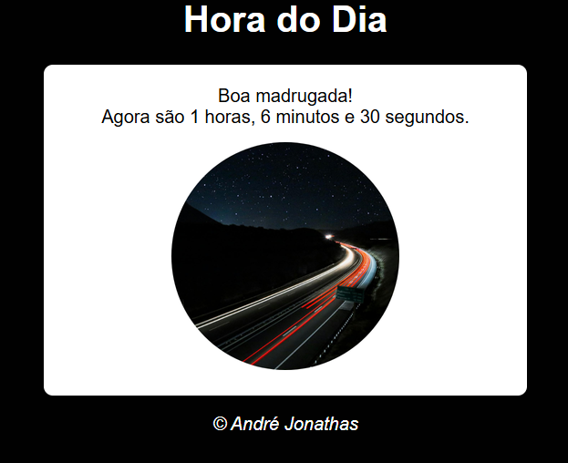
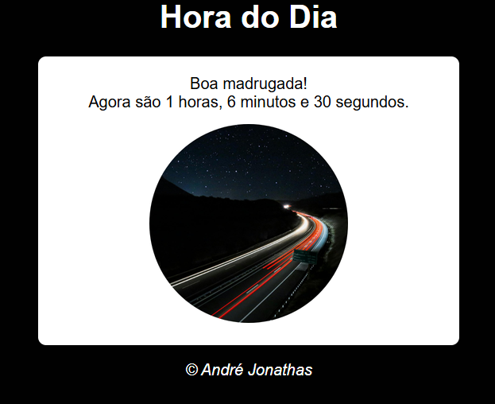

Projeto 1: Relógio
Um relógio digital simples feito com HTML, CSS e JavaScript.
Cada linha de código, um passo à frente.
Olá! Meu nome é André Jonathas da Silva, tenho 18 anos e sou estudante de Análise e Desenvolvimento de Sistemas. Estou sempre em busca de aprender novas tecnologias e aprimorar minhas habilidades em programação. Atualmente, estou focado em desenvolver projetos que me ajudem a crescer como desenvolvedor.
Confira alguns dos meus projetos mais recentes:
Um relógio digital simples feito com HTML, CSS e JavaScript.
Uma aplicação que verifica a idade de uma pessoa com base na data de nascimento informada.